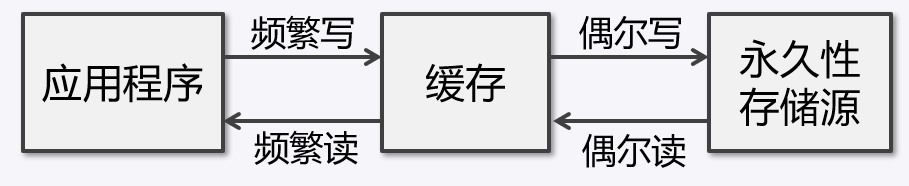
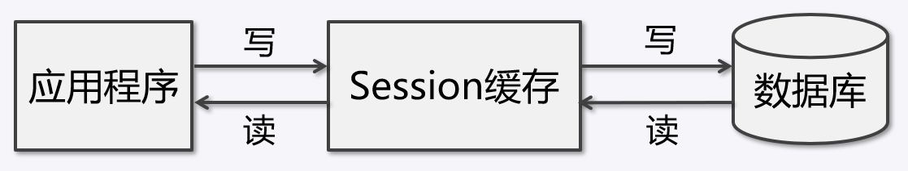
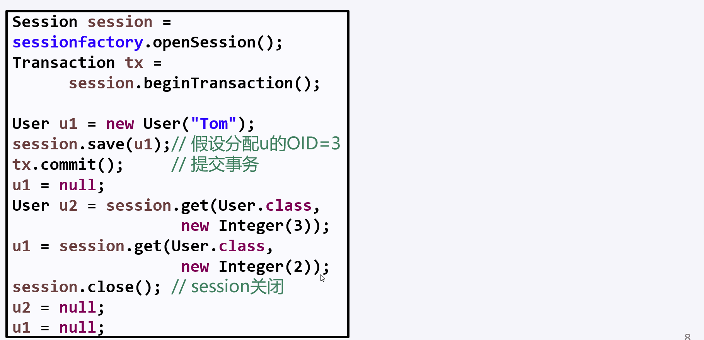
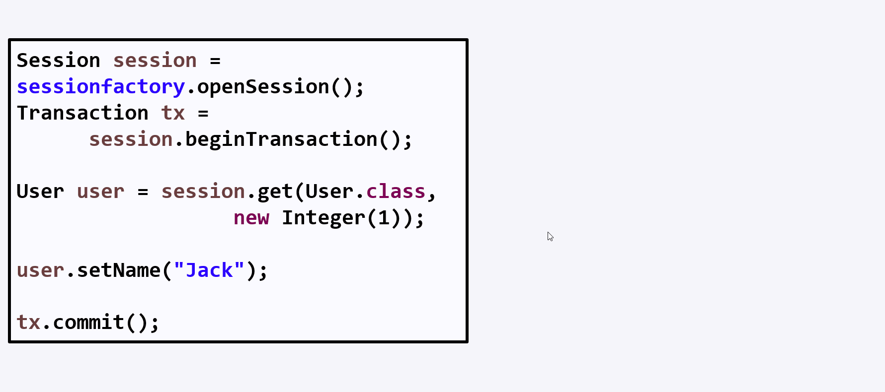
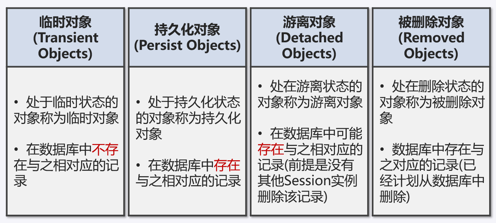
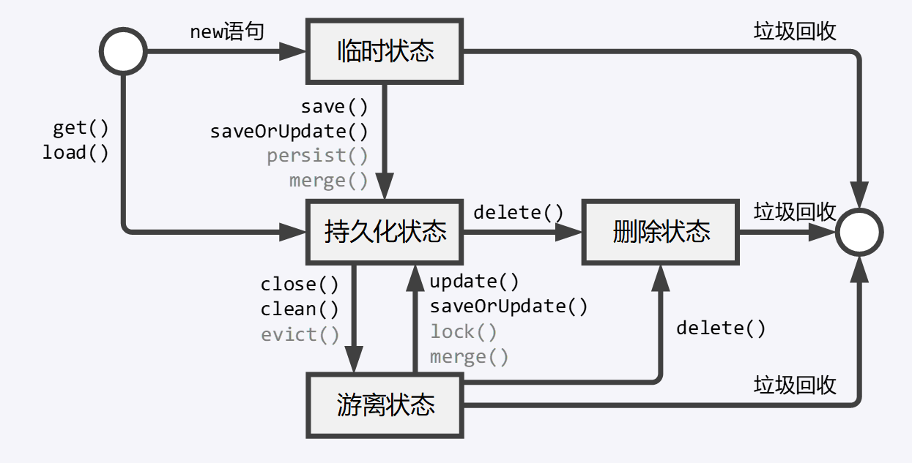

一.Session缓存
缓存
- 缓存介于应用程序和永久性存储源之间，其作用是降低应用程序直接读写永久性存储源的频率，从而提高应用的运行效率。
- 缓存内的数据是永久性存储源中的数据的复制，应用程序在运行时从缓存读写数据，在特定的时刻或事件同步缓存和永久性存储源的数据。

Session缓存
Session 接口的实现类 SessionImpl 中定义了一系列的 Java 集合，这些集合构成了 Session 的缓存。
1 | Session session = sessionFactory.openSession(); |
Session缓存的工作过程
当 Session 执行查询方法时，先从 Session 缓存中读取据，如果缓存中有则直接读取，如果缓存中没有，从数据库中查询并加载到 Session 缓存中，再从缓存中读取。
当 Session 执行 save()、update() 方法时，将对象持久化到数据库中并将对象加载到 Session 缓存中。

Session实现缓存

Session清理缓存
Session在某一时间点按照缓存中对象的属性变化来同步更新数据库的这一过程被称为 Session 清理缓存。
缓存清理的时间点：
- 当调用 transaction.commit() 方法时，会先清理缓存，再向数据库提交事务；
- 当显式调用 Session.flush() 方法时，会清理缓存；
- 当调用 Session 的查询（不包括 load() 和 get() )方法时，如果缓存中对象的属性有变化则清理缓存。
Session对象快照

Session清理缓存的模式
setHibernateFlushMode() 用于设定 Session 清理缓存的模式。
| 清理缓存模式 | Session的查询方法 | commit() | flush() |
|---|---|---|---|
| FlushMode.ALWAYS | 清理 | 清理 | 清理 |
| FlushMode.AUTO | 缓存中对象的属性有变化时清理，没变化不清理 | 清理 | 清理 |
| FlushMode.COMMIT | 不清理 | 清理 | 清理 |
| FlushMode.MANUAL | 不清理 | 不清理 | 清理 |
| FlushMode.NEVER | 已过时，被MANUAL取代 |
Session缓存有三大作用:
- 减少数据库访问次数，提高数据访问的效率；
- 保证缓存中的对象与数据库中相关的记录同步；
- 当缓存中的持久化对象存在循环关联关系时，Session会保证不出现死循环，以及由死循环引起的堆栈溢出异常。
二.Hibernate对象的生命周期
实体对象的4种状态
- Transient(临时状态) ： 刚刚被 new 关键字创建，还没有被持久化，不在Session的缓存中。
- Persistent(持久化状态) ： 已经被持久化，并加入到 Session 缓存中。
- Detached(游离状态) ： 已经被持久化，但不再处于 Session 缓存中。
- Removed(删除状态) ： Session 已经计划将其从数据库删除，并且不再处于 Session 缓存中。

实体对象的生命周期（lifecycle）

三.Hibernate操作持久化对象
Session的save()方法
•1. 把对象加入缓存中，使其变成持久化对象；
•2. 根据映射文件配置的标识符生成器为对象分配一个
OID；
•3. 计划执行一个 insert，把对象当前属性值组装到
insert 语句中；
•4. 事务提交后（transaction.commit()）永久的将数据保存到数据库。
Session的update()方法
•1. 把游离对象重新加入 Session 缓存中，使其变为持久化对象；
•2. 计划执行一个 update，将对象当前属性组装到 update 语句，执行 update 语句；
•3. 事务提交后（transaction.commit()）永久的将数据保存到数据库；
•4. 不管对象属性有没有改变都会执行update （通过设置
Session的saveOrUpdate()方法
- 如果参数是临时对象–save()
- 如果参数是游离对象–update()
- 如果参数是持久化对象–返回
Hibernate 如何区分临时对象：
- 对象的 OID 为 null；
- 如果映射文件中设置了
的 unsaved-value 属性，并且对象的 id 值与 unsaved-value 设置的值相等。
Session的delete()方法
•1. 检查传入的参数是否是持久化对象，如果是持久化对象将其移出 Session 缓存；
•2. 计划执行一个 delete，但是并不立即执行；
•3. 当 Session 清理缓存时才执行 delete，比如执行 Session.flush()。
Session的load()和get()方法
load() 与 get() 方法都是根据 OID 加载持久化对象。
load() 与 get() 方法的不同点：
- 如果数据库中不存在与 OID 对应的记录：
- load() 会抛出 ObjectNotFoundException 异常；
- get() 会返回 null。
- 默认加载策略：
- load() 使用类的延迟加载策略；
- get() 使用类的立即加载策略。